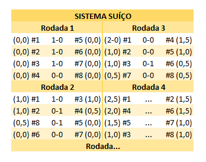

Criado para campeonatos de xadrez e já consolidado no Counter Strike, o formato suíço de disputa, visto como um dos formatos de campeonato mais democráticos, faz parte do pacote de mudanças promovidas pela Riot Games para o Worlds 2023, o Campeonato Mundial de League of Legends (LoL), ate mesmo a UEFA Champions League também adotará o modelo em 2024.

Utilizado pela primeira vez há mais de 100 anos, em um campeonato de xadrez na Suíça, o formato passou por adaptações até os dias atuais, mas continua tendo o mesmo objetivo: facilitar a realização de um torneio com alto número de participantes, sem eliminar boa parte deles já no início.
qualquer um pode chegar no major, pois a valve faz um sistema aberto, e assim como no evento princiapal, as qualificatorias tambem funcionam no formato suico.
as qualificatorias sao chamadas de RMRs, a primeira fase RMR eh aberta e qualquer um pode participar, apos essa primeira fase, vem a fase onde os times que tiveram os melhores resultados na fase aberta, disputam uma vaga no closed RMR, onde so os melhores times do pais conseguem chegar, os times que desempenharem bem no closed RMR, vao para o Mexico em uma lan, para disputar a ultima fase antes do Major em si, as melhores equipes da america do sul e america do norte, disputam entre si para ver quem vai para o major, como as americas nao vem tendo bons resultados nos ultimos majors, temos somente 5 vagas
O sistema suíço foi criado no final do século 19 pelo professor suíço Dr. Julius Muller, com o principal objetivo de que não houvessem mais tantas eliminações rápidas nos torneios de xadrez, pois vários dos participantes viajavam de longe para participar dos campeonatos.
Sendo assim, o formato foi utilizado pela primeira vez em Zurique, na Suíça, em 1895, e até os dias de hoje, 128 anos depois, ainda é utilizado nos principais campeonatos de xadrez, com algumas adaptações para o original.
Nos esports, o formato suíço foi utilizado pela primeira vez no classificatório principal para a ESL One Cologne de CS:GO, em 2017. O sistema aceito rapidamente e posteriormente também usado nas fases principais dos dois Majors realizados naquele mesmo ano, em Atlanta e Cracóvia.
Neste sistema não há a formação de grupos, e os jogadores ou as equipes não enfrentam todos os adversários, pois é otimizado para campeonatos com pouco tempo hábil de disputa. Os jogos são apenas entre jogadores e times que possuem campanhas iguais ou ao menos parecidas, tornando a disputa mais justa e atrativa.
Criado e aprimorado para ser utilizado em campeonatos com alto número de participantes e pouco tempo de disputa, o sistema suíço torna possível um campeonato com todos podendo se enfrentar, sem a obrigatoriedade de uma divisão por grupos. Funciona assim:
Em alguns casos, em que o torneio tem a chance de empate, as equipes que empataram também só podem se enfrentar. Porém, como os confrontos não podem se repetir, uma equipe que empatou pode enfrentar uma que venceu ou perdeu, se necessário.
no caso do nosso RMR americas, o time que chegar em 2 derrotas sera eliminado, e para conseguir a vaga, o time era que ter 3 vitorias no campeonato.
